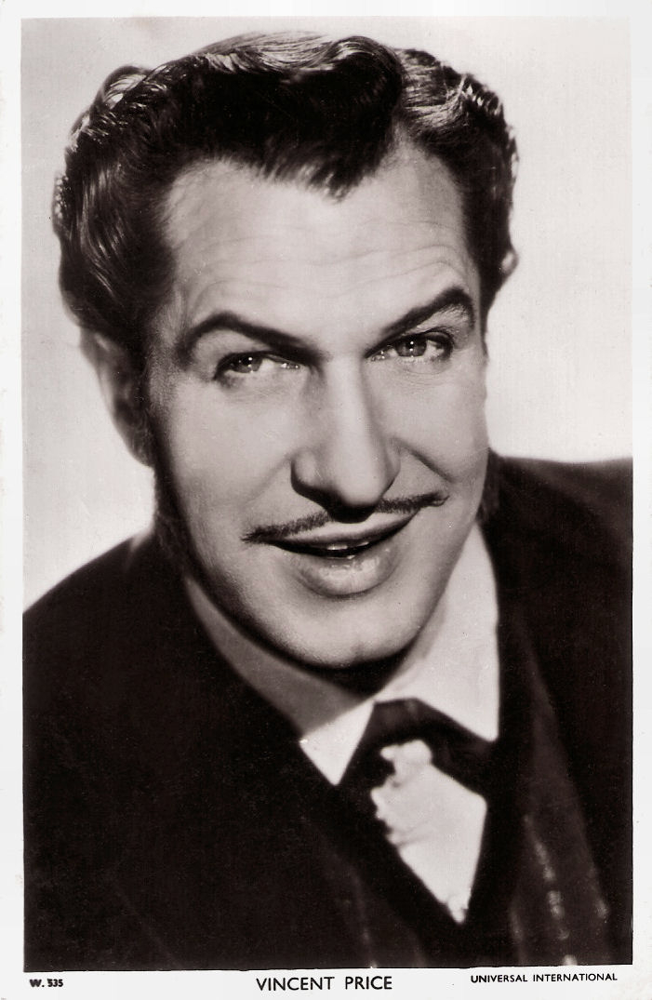

This website is dedicated to Vincent Price’s career as an actor. Each page lists the various films that Price starred in within his career.
Born May 27th, 1911, Vincent Price was an American actor most known for his work in the Horror film franchise. Price’s filmography is extensive, with his work starting in 1938 and even after his death in 1993 with the posthumous use of his voice in The Thief and The Cobbler. Price's work spanned Film, TV, Radio, and theater. He was also an avid art collector, art historian, and cookbook writer. Price was also an advocate for LGBT+ rights, serving as a board member of PFLAG (Formerly an acronym for Parents and Friends of Lesbians and Gays). He also was one of the first celebrities to help combat fears of HIV/AIDs in the media. 